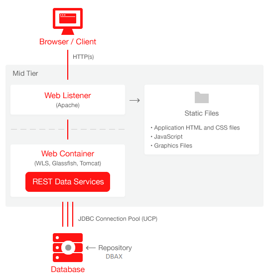

Arquitectura DABX
EL motor de DBAX reside en una Base de Datos Oracle. Por ello, los navegadores web mediante las peticiones HTTP deben llegar de alguna forma al motor de DBAX.
Existen varias arquitecturas que se pueden emplear para usar DBAX que deberemos elegir en función de nuestras necesidades. Dependiendo el entorno en el que estemos trabajando, si se trata de desarrolloo producción, o si ya tenemos middleware antiguo que queramos reutilizar y no tener así que configurar nada nuevo.
Ya que DBAX y Oracle APEX comparten la misma tecnologia las arquitecturas de ambos son similares.
Entorno Producción¶
El siguiente gráfico muestra la arquitectura de DBAX en un entorno de producción, haciendo uso de Oracle Rest Data Services (ORDS).
Oracle comenta lo siguiente sobre este tipo de instalación:
The Oracle REST Data Services (ORDS) is Java based gateway, can be installed into any J2EE compliant Web Server, and is the preferred option for use with Oracle Application Express. It is a free tool that is fully supported against Oracle WebLogic Server, Oracle Glassfish Server, and Apache Tomcat. Oracle REST Data Services is part of the reference architecture used to operate the Oracle Database Cloud Service.

Entorno Desarrollo¶
Para un entorno de desarrollo, preferiblemente local, es muy util el uso de DBMS_EPG (Embedded PL/SQL Gateway).
Oracle comenta lo siguiente sobre este tipo de instalación:
The Embedded PL/SQL Gateway (EPG) runs in the Oracle XML DB Protocal Server within the Oracle database and includes the core features of mod_plsql. Licensing for the Embedded PL/SQL Gateway is included with the Oracle Database license

Aprovechando su middleware antiguo¶
Si en su empresa ya dispone de un Servidor web Oacle HTTP Server (OHS) o los antiguos Oracle IAS que disponene de mod_plsql puede continuar usandolos con total compatibilidad.
Oracle comenta lo siguiente sobre este tipo de instalación:
The Oracle HTTP Server (Apache) with
mod_plsqlplugin can be placed on the same physical machine as the database, or on a separate physical machine.
Note: If installed on the same physical machine as the database then the Oracle HTTP Server is included as part of the limited-use license included with the Oracle Database license - otherwise the Oracle HTTP Server will need to be licensed.
Warning: mod_plsql is deprecated as of Oracle HTTP Server 12c (12.1.3). Oracle recommends using Oracle REST Data Services instead..

Tabla comparativa de Gateways para DABX¶
| Capabilities | Oracle REST Data Services | Embedded PL/SQL Gateway | Oracle HTTP Server |
|---|---|---|---|
| Configuration options | GUI Interface (Release >= 2.0); Administration pages | Database initialization parameters | Database Access Descriptor (DAD) |
| Connection Pool settings | JDBC connection parameters | SHARED_SERVERS; MAX_SHARED_SERVERS | Min/MaxSpareServers; MaxClients |
| Emit RESTful Web Services | Yes (Release >= 2.0) | No | No |
| Support multi-databases | Yes, including RAC | No | Yes, including RAC |
| Environment recommendations | All | Development only | All |
Referencias¶
Puedes conocer más acerca de estos servidores en el siguiente enlace